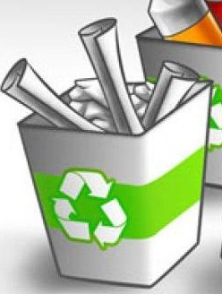
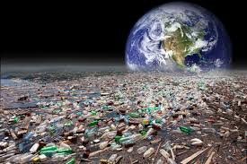
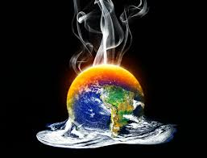

¿Desde Cuando se celebra el dia de la Tierra?
El 22 de abril de cada año se celebra el Día Mundial de la Tierra. Su nacimiento viene del movimiento ambientalista moderno, el cual se inició en 1970 cuando 20 millones de norteamericanos tomaron las calles, los parques y los auditorios para manifestarse por un ambiente saludable y sustentable.
El Día de la Tierra de 1970 logró una coincidencia política que parecía imposible. Se logró el apoyo de políticos de distintas tendencias, ricos y pobres, citadinos y granjeros, magnates y líderes sindicales
Medidas del Cuidado Ambiental
- Reduce, recicla y reutiliza: Aplica la regla de las 3 R's: reducir, reciclar y reutilizar. Siempre podemos minimizar nuestros residuos e intentar utilizar y consumir solo aquello que nos es realmente necesario. A la vez, podemos dar nuevos usos a aquello que íbamos a desechar y aprovecharlo al máximo.
- Planta árboles
En el Día de la Tierra, podemos llevar a cabo una sencilla acción como es plantar árboles que resulta totalmente necesaria y útil para conservar nuestros bosques, los encargados de convertir mediante su proceso de fotosíntesis el dióxido de carbono (CO2) de la atmósfera en oxígeno, el gas que necesitamos para respirar.
- Usa tu bicicleta
La bicicleta es uno de los medios de transporte más ecológicos, así que el Día de la Tierra puede ser un buen momento para decidirte a aparcar el coche e ir a trabajar, a comprar, a pasear... en bicicleta. Además, es una forma de hacer deporte que te ayudará a estar en forma.
- Organiza una recogida de basura
Ponte de acuerdo con un grupo de gente cercana a ti y organiza una salida a recoger basura y residuos a algún sitio cercano como puede ser una playa, un monte, un parque...
- Haz que todos los días sean el Día de la Tierra
Convierte estas acciones en hábitos y coopera con el medio ambiente a diario como si cada día fuera el Día de la Tierra. Pequeños gestos de cada uno de nosotros se convierten en una gran ayuda para conservar la Tierra y seguir disfrutando del planeta.

Beneficios del Cuidado Ambiental
- Algunos recurso naturales se conservaran para un futuro y algunos ambientes evitaran que el aire pierda calidad.
- Respiramos un aire más limpio.
- Viviríamos en un mundo más saludable.
- Ahorraríamos materia prima y energía
- Automóviles que consuman menos combustible
Cuida el Ambiente, Cuida el Planeta. Cuida este pequeño Oasis En el Universo

Calentamiento Global
El término Calentamiento Global se refiere al aumento gradual de las temperaturas de la atmósfera y océanos de la Tierra que se ha detectado en la actualidad, además de su continuo aumento que se proyecta a futuro.
Nadie pone en duda el aumento de la temperatura global, lo que todavía genera controversia es la fuente y razón de este aumento de la temperatura.
Calentamiento Global:
